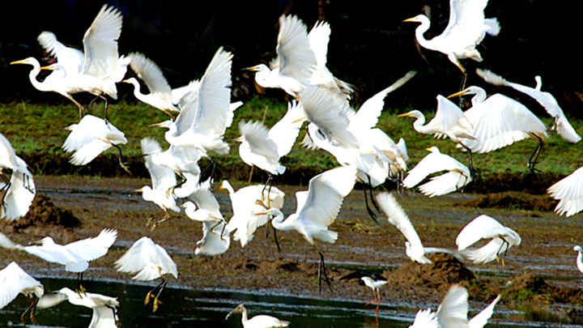
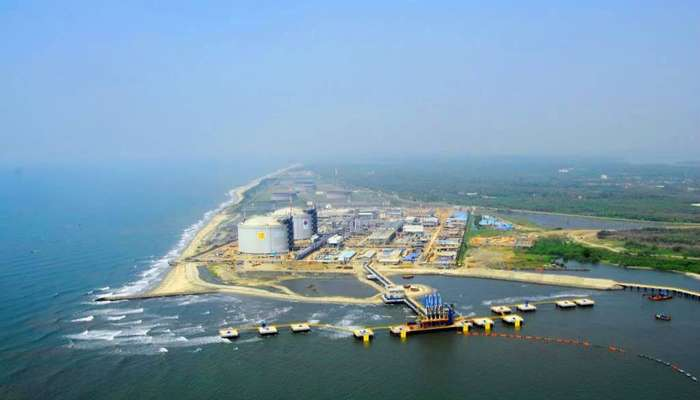
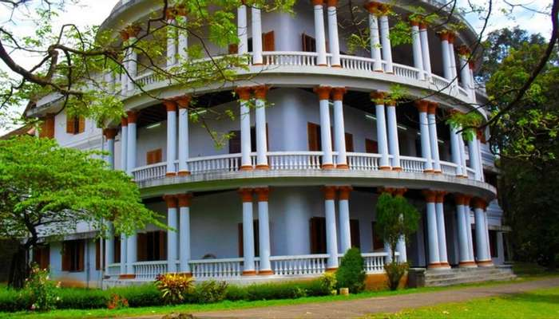
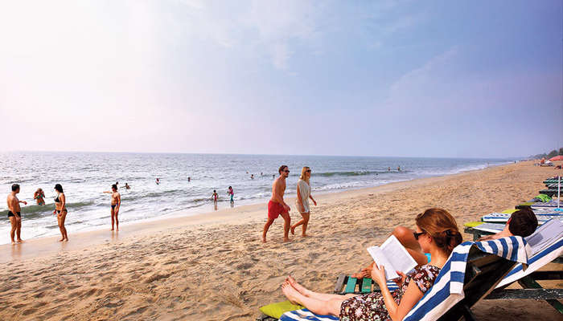

Top 5 places to visit in Kochi
Mattancherry Palace
The Mattancherry Palace, also known as Dutch Palace, is one of the finest examples of the Kerala style of architecture interspersed with colonial influences. Located at around 12 km from Ernakulam, it was built around 1545 C.E. by the Portuguese as a present to King Veera Kerala Verma of Kochi dynasty. It came to be known as the Dutch Palace as it underwent major repairs at the hands of the Dutch. It is famous for its long and spacious halls along with its central courtyard. It is also the home of the deity of the royal family, Pazhayannur Bhagavathy (the Deity of Pazhayannur).
This double storied palace has a lovely collection of murals. These depict some of the great Indian epics like Ramayana and Mahabharata along with revered Gods of the Hindu faith like Lord Krishna of Guruvayur Temple. The great works of Sanskrit poet Kalidasa have also been depicted. The mural paintings cover an area of almost 300 sq. km. One gets an idea of the lives of the royal family with some of the other exhibits. These include the life-size portraits of the Kings of Cochin since 1864, sheathed swords, daggers and axes besides ceremonial spears decorated with feathers. Royal caps, coins issued by the Kings of Cochin along with plans laid out for Cochin by the Dutch can also be viewed here.

Thattekkad Bird Sanctuary
Constituted during 1983, Dr. Salim Ali, the world famous ornithologist, is directly responsible for the wonders on display at the Thattekkad Bird Sanctuary. His famous survey of Travancore in the 1930s led to the formation of this modern day paradise for avian life. He noted that the area was rich in bird diversity and ought to be turned into a sanctuary to conserve the same. The over 300 species that reside in these tropical and deciduous forests are testament to his great vision.
One can run across the Sri Lankan Frogmouth, Racket Tailed Drongo, Bronzed Drongo, White-bellied Treepie, Shama, Yellow-browed Bulbul, Rufous Babbler, Malabar Parakeet, White-bellied Blue Flycatcher and the Malabar Grey Hornbill in these parts. Beautiful teak, rosewood and mahogany plantations can also be viewed here. It also boasts of over 28 mammal species and over 9 species of reptiles.

Vypeen Island
Vypeen is one of the popular places to visit in Ernakulam in one day and certainly one of the best islands in Kerala. A short and beautiful ferry ride from the city will take to this serene island which is dotted with beaches, backwaters and an array of restaurants and hotels. A desktop worthy scenery away from the bustling environment is what makes Vypeen island one of the best places to visit in Ernakulam for lovers.

Hill Palace
Hill Palace is a prominent Heritage museum, which exhibits countless archaeological relics and belongings of the Maharaja of Kochi. This famous palace, which was built in 1865, comprises forty-nine buildings with enchanting gardens and a children’s park. It is opened to the public from 9 AM to 12 noon and from 2 PM to 4: 30 PM. Of all the majestic Ernakulam tourist places, Hill Palace is certainly one of the top attractions.

Cherai Beach
Located on the north end of Vypin island in Kochi, Cherai beach is a 15 km stretch of wild and rugged beauty. Although not overwhelmed by hotels or major restaurants, the beach is dotted with small shacks selling local snacks like pakoras and chips. Stunning lagoons, wide paddy fields and coconut grooves adorn the road to the beach. Ernakulam sightseeing is not complete without a visit to Cherai beach.
